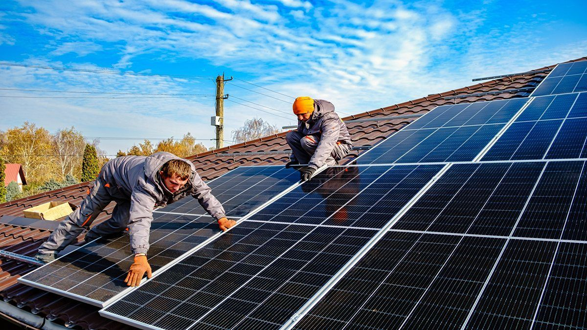

Renewable Energy Sources
Human endeavors in the pursuit of renewable energy, such as solar, wind, and hydroelectric power, yield substantial benefits for our planet's health and longevity. These sustainable energy sources offer a promising solution to combatting climate change by curbing greenhouse gas emissions, thus mitigating the adverse effects of global warming.

Urban Green Spaces
Creating and preserving green spaces in urban areas not only enhances the beauty of the environment but also improves air quality, reduces noise pollution, and provides habitats for wildlife.
Sustainable Agriculture
Adopting sustainable agricultural practices such as organic farming, crop rotation, and water conservation methods helps to protect soil health, preserve biodiversity, and reduce chemical pollution.